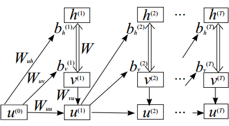

Modeling and generating sequences of polyphonic music with the RNN-RBM¶
Note
This tutorial demonstrates a basic implementation of the RNN-RBM as described in [BoulangerLewandowski12] (pdf). We assume the reader is familiar with recurrent neural networks using the scan op and restricted Boltzmann machines (RBM).
Note
The code for this section is available for download here: rnnrbm.py.
You will need the modified Python MIDI package (GPL license) in your $PYTHONPATH or in the working directory in order to convert MIDI files to and from piano-rolls.
The script also assumes that the content of the Nottingham Database of folk tunes has been extracted in the ../data directory.
Alternative MIDI datasets are available here.
Note that both dependencies above can be setup automatically by running the download.sh script in the ../data directory of the Deep Learning Tutorials repository.
Caution
Need Theano 0.6 or more recent.
The RNN-RBM¶
The RNN-RBM is an energy-based model for density estimation of temporal sequences, where the feature vector \(v^{(t)}\) at time step \(t\) may be high-dimensional. It allows to describe multimodal conditional distributions of \(v^{(t)}|\mathcal A^{(t)}\), where \(\mathcal A^{(t)}\equiv \{v_\tau|\tau<t\}\) denotes the sequence history at time \(t\), via a series of conditional RBMs (one a each time step) whose parameters \(b_v^{(t)},b_h^{(t)}\) depend on the output of a deterministic RNN with hidden units \(u^{(t)}\):
and the single-layer RNN recurrence relation is defined by:
The resulting model is unrolled in time in the following figure:
The overall probability distribution is given by the sum over the \(T\) time steps in a given sequence:
where the right-hand side multiplicand is the marginalized probability of the \(t^\mathrm{th}\) RBM.
Note that for clarity of the implementation, contrarily to [BoulangerLewandowski12], we use the obvious naming convention for weight matrices and we use \(u^{(t)}\) instead of \(\hat h^{(t)}\) for the recurrent hidden units.
Implementation¶
We wish to construct two Theano functions: one to train the RNN-RBM, and one to generate sample sequences from it.
For training, i.e. given \(\{v^{(t)}\}\), the RNN hidden state \(\{u^{(t)}\}\) and the associated \(\{b_v^{(t)}, b_h^{(t)}\}\) parameters are deterministic and can be readily computed for each training sequence. A stochastic gradient descent (SGD) update on the parameters can then be estimated via contrastive divergence (CD) on the individual time steps of a sequence in the same way that individual training examples are treated in a mini-batch for regular RBMs.
Sequence generation is similar except that the \(v^{(t)}\) must be sampled sequentially at each time step with a separate (non-batch) Gibbs chain before being passed down to the recurrence and the sequence history.
The RBM layer¶
The build_rbm function shown below builds a Gibbs chain from an input mini-batch (a binary matrix) via the CD approximation.
Note that it also supports a single frame (a binary vector) in the non-batch case.
def build_rbm(v, W, bv, bh, k):
'''Construct a k-step Gibbs chain starting at v for an RBM.
v : Theano vector or matrix
If a matrix, multiple chains will be run in parallel (batch).
W : Theano matrix
Weight matrix of the RBM.
bv : Theano vector
Visible bias vector of the RBM.
bh : Theano vector
Hidden bias vector of the RBM.
k : scalar or Theano scalar
Length of the Gibbs chain.
Return a (v_sample, cost, monitor, updates) tuple:
v_sample : Theano vector or matrix with the same shape as `v`
Corresponds to the generated sample(s).
cost : Theano scalar
Expression whose gradient with respect to W, bv, bh is the CD-k
approximation to the log-likelihood of `v` (training example) under the
RBM. The cost is averaged in the batch case.
monitor: Theano scalar
Pseudo log-likelihood (also averaged in the batch case).
updates: dictionary of Theano variable -> Theano variable
The `updates` object returned by scan.'''
def gibbs_step(v):
mean_h = T.nnet.sigmoid(T.dot(v, W) + bh)
h = rng.binomial(size=mean_h.shape, n=1, p=mean_h,
dtype=theano.config.floatX)
mean_v = T.nnet.sigmoid(T.dot(h, W.T) + bv)
v = rng.binomial(size=mean_v.shape, n=1, p=mean_v,
dtype=theano.config.floatX)
return mean_v, v
chain, updates = theano.scan(lambda v: gibbs_step(v)[1], outputs_info=[v],
n_steps=k)
v_sample = chain[-1]
mean_v = gibbs_step(v_sample)[0]
monitor = T.xlogx.xlogy0(v, mean_v) + T.xlogx.xlogy0(1 - v, 1 - mean_v)
monitor = monitor.sum() / v.shape[0]
def free_energy(v):
return -(v * bv).sum() - T.log(1 + T.exp(T.dot(v, W) + bh)).sum()
cost = (free_energy(v) - free_energy(v_sample)) / v.shape[0]
return v_sample, cost, monitor, updates
The RNN layer¶
The build_rnnrbm function defines the RNN recurrence relation to obtain the RBM parameters; the recurrence function is flexible enough to serve both in the training scenario where \(v^{(t)}\) is given and the “batch” RBM is constructed at the end on the whole sequence at once, and in the generation scenario where \(v^{(t)}\) is sampled separately at each time step using the Gibbs chain defined above.
def build_rnnrbm(n_visible, n_hidden, n_hidden_recurrent):
'''Construct a symbolic RNN-RBM and initialize parameters.
n_visible : integer
Number of visible units.
n_hidden : integer
Number of hidden units of the conditional RBMs.
n_hidden_recurrent : integer
Number of hidden units of the RNN.
Return a (v, v_sample, cost, monitor, params, updates_train, v_t,
updates_generate) tuple:
v : Theano matrix
Symbolic variable holding an input sequence (used during training)
v_sample : Theano matrix
Symbolic variable holding the negative particles for CD log-likelihood
gradient estimation (used during training)
cost : Theano scalar
Expression whose gradient (considering v_sample constant) corresponds
to the LL gradient of the RNN-RBM (used during training)
monitor : Theano scalar
Frame-level pseudo-likelihood (useful for monitoring during training)
params : tuple of Theano shared variables
The parameters of the model to be optimized during training.
updates_train : dictionary of Theano variable -> Theano variable
Update object that should be passed to theano.function when compiling
the training function.
v_t : Theano matrix
Symbolic variable holding a generated sequence (used during sampling)
updates_generate : dictionary of Theano variable -> Theano variable
Update object that should be passed to theano.function when compiling
the generation function.'''
W = shared_normal(n_visible, n_hidden, 0.01)
bv = shared_zeros(n_visible)
bh = shared_zeros(n_hidden)
Wuh = shared_normal(n_hidden_recurrent, n_hidden, 0.0001)
Wuv = shared_normal(n_hidden_recurrent, n_visible, 0.0001)
Wvu = shared_normal(n_visible, n_hidden_recurrent, 0.0001)
Wuu = shared_normal(n_hidden_recurrent, n_hidden_recurrent, 0.0001)
bu = shared_zeros(n_hidden_recurrent)
params = W, bv, bh, Wuh, Wuv, Wvu, Wuu, bu # learned parameters as shared
# variables
v = T.matrix() # a training sequence
u0 = T.zeros((n_hidden_recurrent,)) # initial value for the RNN hidden
# units
# If `v_t` is given, deterministic recurrence to compute the variable
# biases bv_t, bh_t at each time step. If `v_t` is None, same recurrence
# but with a separate Gibbs chain at each time step to sample (generate)
# from the RNN-RBM. The resulting sample v_t is returned in order to be
# passed down to the sequence history.
def recurrence(v_t, u_tm1):
bv_t = bv + T.dot(u_tm1, Wuv)
bh_t = bh + T.dot(u_tm1, Wuh)
generate = v_t is None
if generate:
v_t, _, _, updates = build_rbm(T.zeros((n_visible,)), W, bv_t,
bh_t, k=25)
u_t = T.tanh(bu + T.dot(v_t, Wvu) + T.dot(u_tm1, Wuu))
return ([v_t, u_t], updates) if generate else [u_t, bv_t, bh_t]
# For training, the deterministic recurrence is used to compute all the
# {bv_t, bh_t, 1 <= t <= T} given v. Conditional RBMs can then be trained
# in batches using those parameters.
(u_t, bv_t, bh_t), updates_train = theano.scan(
lambda v_t, u_tm1, *_: recurrence(v_t, u_tm1),
sequences=v, outputs_info=[u0, None, None], non_sequences=params)
v_sample, cost, monitor, updates_rbm = build_rbm(v, W, bv_t[:], bh_t[:],
k=15)
updates_train.update(updates_rbm)
# symbolic loop for sequence generation
(v_t, u_t), updates_generate = theano.scan(
lambda u_tm1, *_: recurrence(None, u_tm1),
outputs_info=[None, u0], non_sequences=params, n_steps=200)
return (v, v_sample, cost, monitor, params, updates_train, v_t,
updates_generate)
Putting it all together¶
We now have all the necessary ingredients to start training our network on real symbolic sequences of polyphonic music.
class RnnRbm:
'''Simple class to train an RNN-RBM from MIDI files and to generate sample
sequences.'''
def __init__(
self,
n_hidden=150,
n_hidden_recurrent=100,
lr=0.001,
r=(21, 109),
dt=0.3
):
'''Constructs and compiles Theano functions for training and sequence
generation.
n_hidden : integer
Number of hidden units of the conditional RBMs.
n_hidden_recurrent : integer
Number of hidden units of the RNN.
lr : float
Learning rate
r : (integer, integer) tuple
Specifies the pitch range of the piano-roll in MIDI note numbers,
including r[0] but not r[1], such that r[1]-r[0] is the number of
visible units of the RBM at a given time step. The default (21,
109) corresponds to the full range of piano (88 notes).
dt : float
Sampling period when converting the MIDI files into piano-rolls, or
equivalently the time difference between consecutive time steps.'''
self.r = r
self.dt = dt
(v, v_sample, cost, monitor, params, updates_train, v_t,
updates_generate) = build_rnnrbm(
r[1] - r[0],
n_hidden,
n_hidden_recurrent
)
gradient = T.grad(cost, params, consider_constant=[v_sample])
updates_train.update(
((p, p - lr * g) for p, g in zip(params, gradient))
)
self.train_function = theano.function(
[v],
monitor,
updates=updates_train
)
self.generate_function = theano.function(
[],
v_t,
updates=updates_generate
)
def train(self, files, batch_size=100, num_epochs=200):
'''Train the RNN-RBM via stochastic gradient descent (SGD) using MIDI
files converted to piano-rolls.
files : list of strings
List of MIDI files that will be loaded as piano-rolls for training.
batch_size : integer
Training sequences will be split into subsequences of at most this
size before applying the SGD updates.
num_epochs : integer
Number of epochs (pass over the training set) performed. The user
can safely interrupt training with Ctrl+C at any time.'''
assert len(files) > 0, 'Training set is empty!' \
' (did you download the data files?)'
dataset = [midiread(f, self.r,
self.dt).piano_roll.astype(theano.config.floatX)
for f in files]
try:
for epoch in range(num_epochs):
numpy.random.shuffle(dataset)
costs = []
for s, sequence in enumerate(dataset):
for i in range(0, len(sequence), batch_size):
cost = self.train_function(sequence[i:i + batch_size])
costs.append(cost)
print('Epoch %i/%i' % (epoch + 1, num_epochs))
print(numpy.mean(costs))
sys.stdout.flush()
except KeyboardInterrupt:
print('Interrupted by user.')
def generate(self, filename, show=True):
'''Generate a sample sequence, plot the resulting piano-roll and save
it as a MIDI file.
filename : string
A MIDI file will be created at this location.
show : boolean
If True, a piano-roll of the generated sequence will be shown.'''
piano_roll = self.generate_function()
midiwrite(filename, piano_roll, self.r, self.dt)
if show:
extent = (0, self.dt * len(piano_roll)) + self.r
pylab.figure()
pylab.imshow(piano_roll.T, origin='lower', aspect='auto',
interpolation='nearest', cmap=pylab.cm.gray_r,
extent=extent)
pylab.xlabel('time (s)')
pylab.ylabel('MIDI note number')
pylab.title('generated piano-roll')
Results¶
We ran the code on the Nottingham database for 200 epochs; training took approximately 24 hours.
The output was the following:
Epoch 1/200 -15.0308940028
Epoch 2/200 -10.4892606673
Epoch 3/200 -10.2394696138
Epoch 4/200 -10.1431669994
Epoch 5/200 -9.7005382843
Epoch 6/200 -8.5985647524
Epoch 7/200 -8.35115428534
Epoch 8/200 -8.26453580552
Epoch 9/200 -8.21208991542
Epoch 10/200 -8.16847274143
... truncated for brevity ...
Epoch 190/200 -4.74799179994
Epoch 191/200 -4.73488515216
Epoch 192/200 -4.7326138489
Epoch 193/200 -4.73841636884
Epoch 194/200 -4.70255511452
Epoch 195/200 -4.71872634914
Epoch 196/200 -4.7276415885
Epoch 197/200 -4.73497644728
Epoch 198/200 -inf
Epoch 199/200 -4.75554987143
Epoch 200/200 -4.72591935412
The figures below show the piano-rolls of two sample sequences and we provide the corresponding MIDI files:

Listen to sample1.mid¶
{kind=link}
Listen to sample2.mid¶
How to improve this code¶
The code shown in this tutorial is a stripped-down version that can be improved in the following ways:
Preprocessing: transposing the sequences in a common tonality (e.g. C major / minor) and normalizing the tempo in beats (quarternotes) per minute can have the most effect on the generative quality of the model.
Pretraining techniques: initialize the \(W,b_v,b_h\) parameters with independent RBMs with fully shuffled frames (i.e. \(W_{uh}=W_{uv}=W_{uu}=W_{vu}=0\)); initialize the \(W_{uv},W_{uu},W_{vu},b_u\) parameters of the RNN with the auxiliary cross-entropy objective via either SGD or, preferably, Hessian-free optimization [BoulangerLewandowski12].
Optimization techniques: gradient clipping, Nesterov momentum and the use of NADE for conditional density estimation.
Hyperparameter search: learning rate (separately for the RBM and RNN parts), learning rate schedules, batch size, number of hidden units (recurrent and RBM), momentum coefficient, momentum schedule, Gibbs chain length \(k\) and early stopping.
Learn the initial condition \(u^{(0)}\) as a model parameter.
A few samples generated with code including these features are available here: sequences.zip.